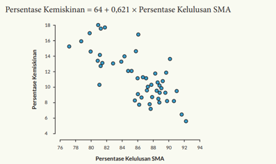

<!DOCTYPE html>
<html>

<head>
  <!-- Basic -->
  <meta charset="utf-8" />
  <meta http-equiv="X-UA-Compatible" content="IE=edge" />
  <!-- Mobile Metas -->
  <meta name="viewport" content="width=device-width, initial-scale=1, shrink-to-fit=no" />
  <!-- Site Metas -->
  <meta name="keywords" content="" />
  <meta name="description" content="" />
  <meta name="author" content="" />

  <title>Tugas Matematika</title>

  <!-- slider stylesheet -->
  <link rel="stylesheet" type="text/css"
    href="https://cdnjs.cloudflare.com/ajax/libs/OwlCarousel2/2.1.3/assets/owl.carousel.min.css" />


  <!-- font wesome stylesheet -->
  <link rel="stylesheet" href="https://maxcdn.bootstrapcdn.com/font-awesome/4.3.0/css/font-awesome.min.css">

  <!-- bootstrap core css -->
  <link rel="stylesheet" type="text/css" href="css/bootstrap.css" />

  <!-- fonts style -->
  <link href="https://fonts.googleapis.com/css?family=Poppins:400,600,700&display=swap" rel="stylesheet">
  <!-- Custom styles for this template -->
  <link href="css/style.css" rel="stylesheet" />
  <!-- responsive style -->
  <link href="css/responsive.css" rel="stylesheet" />
  <style>
    body{
      background-image: url(./images/body_bg.jpg);
    }
  </style>
</head>

<body class="sub_page">

  <!-- about section -->

  <section class="about_section layout_padding">
    <div class="container">
      <div class="row">
        <div class="col-md-6">
          <div class="detail-box">
            <div class="heading_container">
              <h2>
                No. 9
              </h2>
            </div>
            <p>
              a. Bagaimana interpretasi nilai 𝒓^𝟐 <br>
𝑟^(2=0,558) <br>
Artinya 0,558 x 100% = 55,8% dari persentase kemiskinan (y) diterangkan oleh presentase kelulusan SMAoleh persentase kelulusan SMA100% – 55,8% = 44,2% dipengaruhi faktor lain <br>

b. Berapa Nilai r?Karena 𝑟^(2=0,558)𝑟="±" √0,558="± 0,747" <br>
Jadi, r=0,747 atau r= -0,747 <br>

c. Apakah tingkat kelulusan naik, maka persentase kemiskinan menurun <br>
Tidak, sebab ada variable lain yang juga berperan dalam penurunan persentase kemiskinan<br>


            </p>
            <a href="index.html">
              Kembali
            </a>
          </div>
        </div>
        <div class="col-md-6">
          <div class="img-box">
            
          </div>
        </div>
      </div>
    </div>
  </section>
  <!-- end about section -->

  <script type="text/javascript" src="js/jquery-3.4.1.min.js"></script>
  <script type="text/javascript" src="js/bootstrap.js"></script>

</body>

</html>